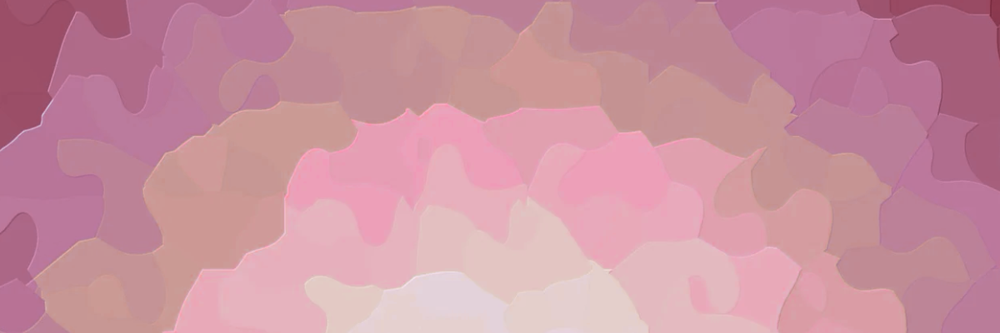

Conferencia Internacional de Creatividad e Innovación 2025
Descubre ideas que transforman el mundo
15 y 16 de noviembre
Medellín, Colombia.

Descubre ideas que transforman el mundo
15 y 16 de noviembre
Medellín, Colombia.
Futuro del creativo
Una conferencia de innovación es un evento que reúne a profesionales para compartir conocimientos, metodologías y experiencias sobre cómo desarrollar ideas nuevas, mejorar procesos y transformar negocios. Pueden estar enfocadas en sectores específicos como la administración pública, la salud o la ingeniería, o tener un enfoque más general sobre tecnología y negocios, y a menudo incluyen ponencias, paneles y talleres prácticos.
Inspiración
Proceso creativo